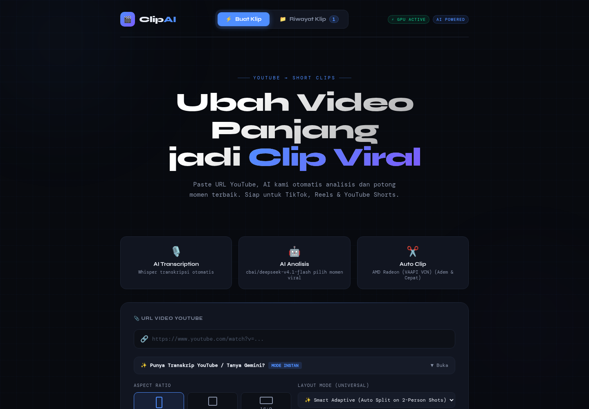

01 / ClipAI
Satu URL YouTube jadi beberapa klip vertikal.
ClipAI mengunduh video, mentranskripsinya dengan Whisper, menilai setiap momen, lalu merender klip 1080x1920 yang siap diunggah ke Shorts, Reels, atau TikTok.
- 01Transkripsi
Whisper mengubah audio menjadi teks bertimestamp.
- 02Penilaian momen
Skor untuk hook, pacing, retention, dan payoff.
- 03Render
Subtitle per kata, reframe wajah 9:16, output 1080x1920.
Pada satu uji internal, sumber video 19 detik menghasilkan 3 klip. Skor momen tertinggi 91 dari 100. ClipAI juga menyusun judul, deskripsi, dan tagar. Antreannya memakai BullMQ dan Redis, render-nya memakai FFmpeg di GPU AMD dengan VAAPI.
